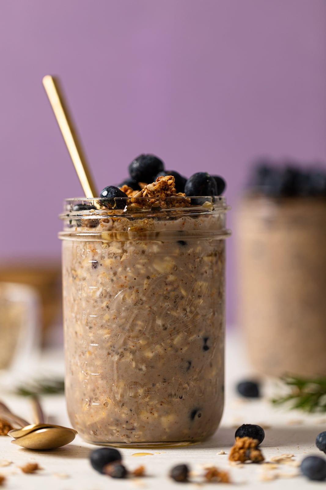

Overnight Blueberry Chocolate Protein Oats

Embark on a culinary journey with the Blueberry Chocolate Protein
Overnight Oats.
A symphony of flavors unfolds as vanilla-infused casein oats meld with the
earthy richness of unsweetened cocoa. Swirled with sugar-free blueberry
jam, the oats are graced with bursts of tart sweetness that mingle with
the tangy undertones of skyr. Fresh blueberries, plump and bursting, weave
a tapestry of vibrant hues that interplay with the deep tones of cocoa.
With every bite, the flavors intermingle, inviting you to savor the
harmonious balance of wholesome ingredients.
Macros
- Calories: 452cals
- Carbs: 61g
- Fats: 6g
- Protein: 36g
Ingredients
- 50g oats
- 15g casein vanilla
- 150g skyr
- 50g blueberry jam
- 150g blueberries
- 5g cocoa powder
- 50g water
- salt
Instructions
-
Mix 50 grams of oats, 15 grams of casein vanilla protein powder, and 5
grams of unsweetened cocoa powder in a bowl.
- Add about 50 grams of sugar-free blueberry jam to the mixture.
- Stir in 150 grams of plain skyr or non-fat yogurt.
- Add a pinch of salt and 50 grams of water to the mixture.
- Mix until the ingredients are well combined and smooth.
- Gently fold in 50 grams of fresh blueberries.
- Refrigerate the mixture overnight.
-
Wake up to your delicious Blueberry Chocolate Protein Overnight Oats and
indulge!
(Back to top)
(HomePage)